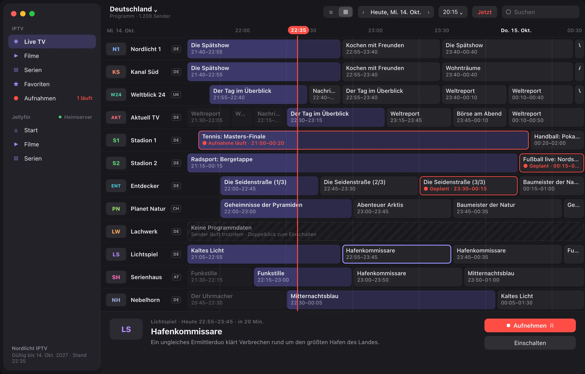
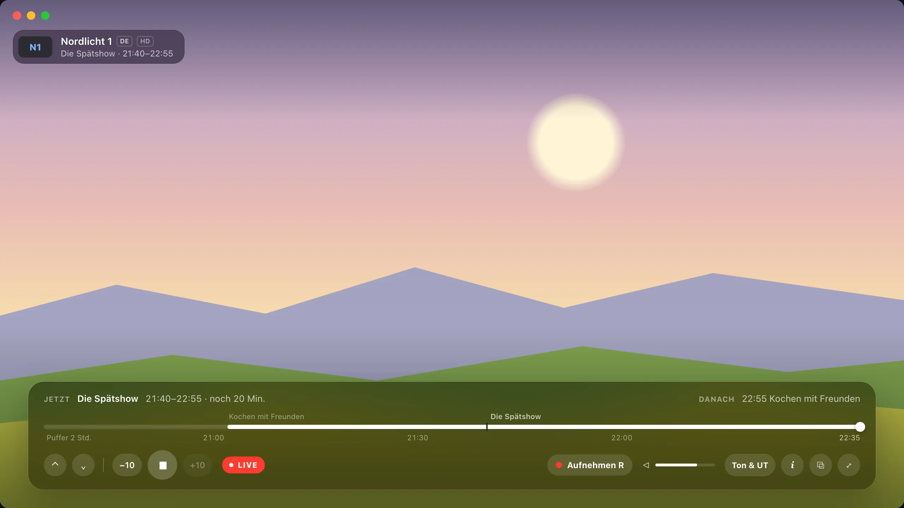
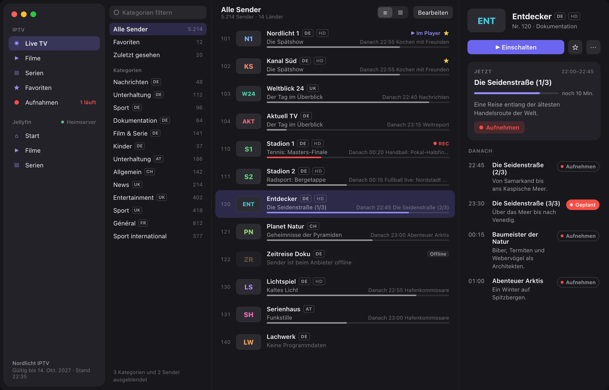
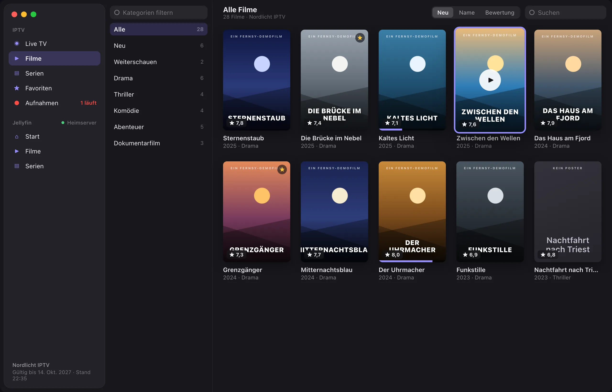
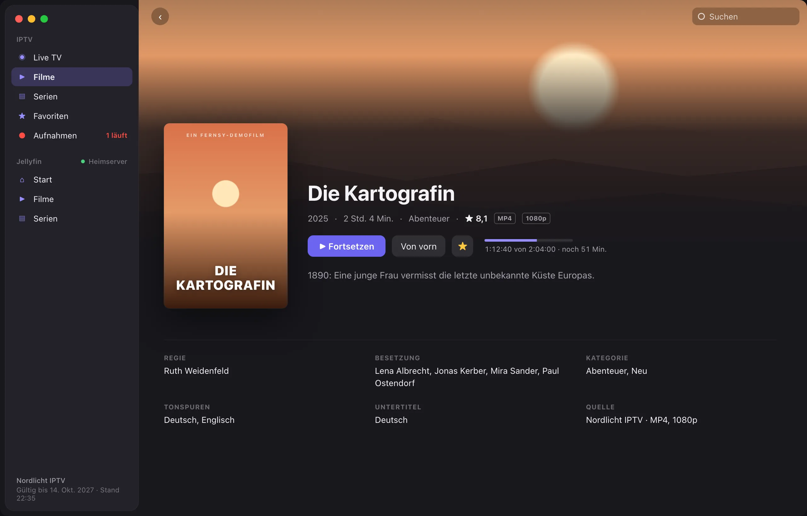
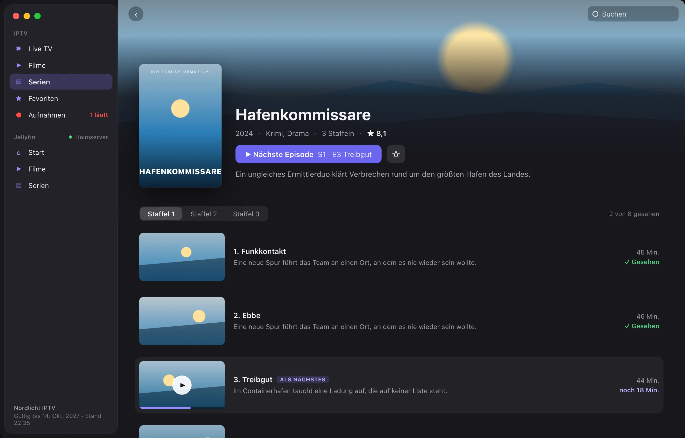
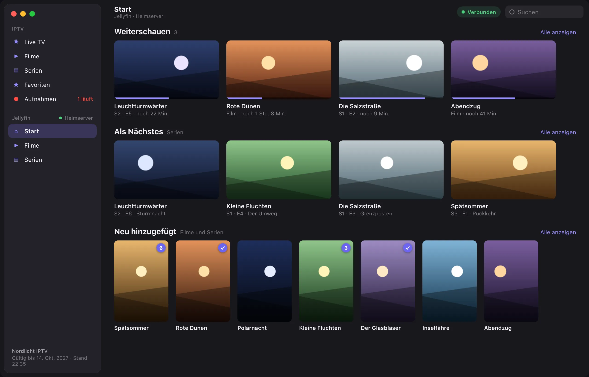
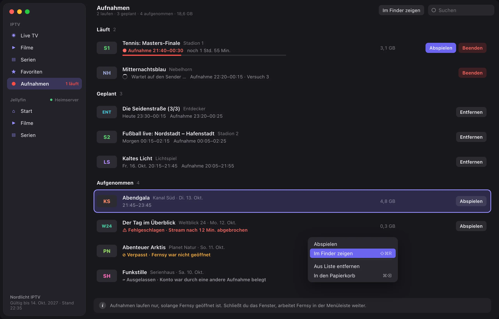

Dein IPTV-Zugang als echte Mac-App
Live-TV mit Programmraster, Filme und Serien – schnell, nativ und ohne Werbung. Für Xtream-Codes-Zugänge.
Programmraster mit allen Sendern und Jetzt-Linie

Live-TV im Player mit laufender Sendung

Senderliste mit Kategorien und aktuellem Programm

Filmkatalog als Poster-Raster

Filmdetails mit Handlung und Besetzung

Serie mit Staffeln und Episoden

Aufnehmen, zurückspulen und deine eigene Mediathek.
Dein eigener Medienserver, direkt neben dem IPTV-Zugang.
Verbinde zusätzlich deinen Jellyfin-Server. Beide Konten sind gleichzeitig aktiv und erscheinen getrennt in der Seitenleiste, mit derselben Bedienung.
- Weiterschauen, Als Nächstes und Neu hinzugefügt auf einer Startseite
- Bibliotheken und Genres als Kategorien
- Gesehen-Status, ungesehene Episoden und Favoriten
- Bibliothek bleibt sichtbar, wenn der Server offline ist

Sendungen aufnehmen, ohne etwas zu verpassen.
Aufnehmen geht direkt aus der Senderliste, dem Programmraster oder dem Player. Fernsy arbeitet in der Menüleiste weiter, auch wenn das Fenster geschlossen ist.
- Vor- und Nachlauf selbst einstellbar
- Abspielen schon während der Aufnahme
- Laufend, geplant und aufgenommen in einer Liste
- Klare Hinweise bei fehlgeschlagenen oder verpassten Aufnahmen

Timeshift
Live-TV anhalten und bis zu zwei Stunden zurückspulen. Ein Klick bringt dich zurück zu Live.
Bild-in-Bild
Weiterschauen, während du am Mac arbeitest. Auch das Umschalten klappt im kleinen Fenster.
Eine Suche für alles
Sender, Filme, Serien, Aufnahmen und Jellyfin in einem Suchfeld, nach Quelle sortiert.
Menüleiste
Laufende und nächste Aufnahmen auf einen Blick, auch ohne geöffnetes Fenster.
Alles, was Fernsy kann
Live-TV
- Senderliste mit Kategorien, Suche und Favoriten
- Programmraster für alle Sender
- Umschalten mit den Pfeiltasten
Filme und Serien
- Poster-Ansicht, sortiert nach Neuheit, Name oder Bewertung
- Staffeln und Episoden
- Weiterschauen, wo du aufgehört hast
Wiedergabe
- Hardware-Dekodierung, bis 4K
- Deinterlacing auf der Grafikkarte
- Nahtlose Wiederverbindung bei Netzaussetzern
Datenschutz
Fernsy erfasst keine Daten. Deine Zugangsdaten liegen im Schlüsselbund deines Macs, und die App verbindet sich nur mit deinem Anbieter.
Wichtig: Fernsy enthält keine Sender, Filme oder sonstigen Inhalte und verkauft keine Abonnements. Du benötigst einen Zugang (Xtream Codes API) bei einem IPTV-Anbieter deiner Wahl.